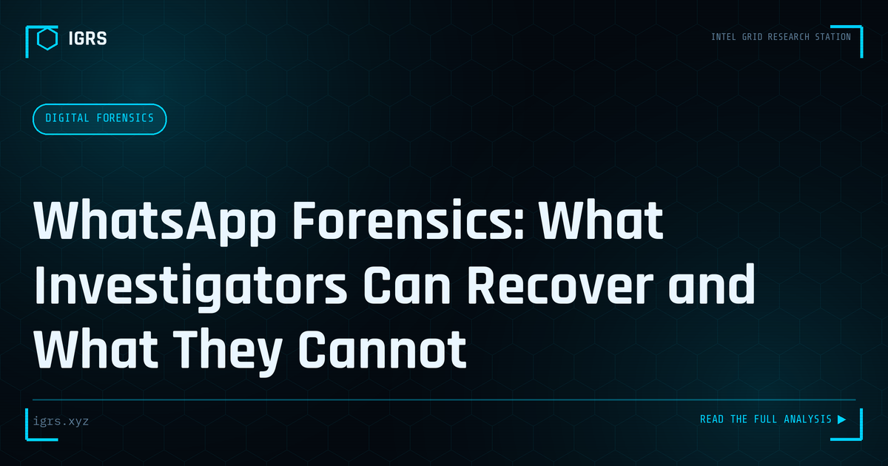

WhatsApp Forensics: What Investigators Can Recover and What They Cannot
| File No. | IGRS-017/2026 |
| Subject | Technical guide to WhatsApp data recovery — databases, backups, metadata and legal process |
| Category | Digital Forensics |
| Author | Manuj Kumar Pandey |
| Published | 2026-04-11 |
| Reading time | 12 minutes |
WhatsApp is central to most Indian criminal investigations. What evidence survives, how it is extracted, and what the platform provides in response to legal process.
WhatsApp Forensics: Extracting Evidence from India's Top Messenger
With over 500 million users in India, WhatsApp is central to both daily communication and, frequently, to crime. From fraud coordination to harassment to evidence of conspiracy, WhatsApp data is requested in a vast proportion of Indian investigations. WhatsApp forensics — the sound extraction and analysis of this data — is therefore an essential investigative skill. This guide covers the complete methodology.
What WhatsApp Forensics Can Recover
| Data Type | Source |
|---|---|
| Messages | Device database, backups |
| Media (photos, video, audio) | Device storage, backups |
| Call logs | App database |
| Contacts and groups | App database |
| Deleted messages | Database remnants, backups, notification logs |
| Location shares | Message content |
Sources of WhatsApp Data
WhatsApp evidence comes from multiple sources, each with different access requirements:
- Device extraction — the msgstore.db database holds messages and metadata
- Local backups — periodic backups stored on the device
- Cloud backups — Google Drive (Android) or iCloud (iOS)
- Meta legal process — account metadata (not message content due to encryption)
The Encryption Reality
WhatsApp messages are end-to-end encrypted in transit, meaning Meta cannot provide message content even under legal process. However — and this is crucial — the messages are decrypted on the device itself. This means device extraction and decrypted backups DO yield message content. The encryption protects messages in transit, not the data at rest on the device. This distinction is fundamental to WhatsApp forensics.
Recovering Deleted WhatsApp Messages
Deleted WhatsApp messages can often be recovered from several sources: the SQLite database may retain deleted message remnants, local and cloud backups predating the deletion contain the messages, and on Android, notification logs may have captured message content. The recovery success depends on timing and the extraction method, making prompt device seizure important.
Database Analysis
The core of WhatsApp forensics is the msgstore.db SQLite database. Forensic tools and manual SQLite analysis parse this database to reconstruct conversations with timestamps, sender information, and message status. The wa.db database holds contact information. Analysing these databases reconstructs the complete communication picture, including group memberships and participant details.
Meta Legal Process for WhatsApp
While message content requires device access, Meta provides account metadata through its law enforcement portal (facebook.com/records). Available data includes account creation date, the linked phone number, last-seen and connection information, and IP addresses. This metadata establishes account ownership and activity patterns, complementing the content obtained from device extraction.
Legal Framework and Admissibility
| Requirement | Provision |
|---|---|
| Device seizure | Section 94 BNSS |
| Evidence certificate | Section 63 BSA 2023 |
| Integrity | Hash verification |
WhatsApp evidence is admissible with proper Section 63 certification and hash verification. Critically, simple screenshots of WhatsApp chats are weak evidence easily challenged; forensically extracted data with metadata and certification holds up far better in court.
Verifying WhatsApp Evidence Authenticity
Because WhatsApp screenshots can be faked, courts increasingly expect forensic extraction rather than screenshots. Forensic extraction preserves metadata — timestamps, sender IDs, message status — that proves authenticity. When challenged, the extracted database with its hash value and Section 63 certificate demonstrates the evidence is genuine and unaltered, which a screenshot cannot.
Business and Group Investigation
WhatsApp Business accounts and groups present additional investigative dimensions. Business accounts may reveal commercial fraud operations, while group analysis exposes networks and coordination — valuable in conspiracy and organised crime cases. Group metadata reveals who created the group, who the admins are, and the participant list, mapping the network behind coordinated activity.
Building WhatsApp Forensics Capability
Effective WhatsApp forensics combines device extraction, database analysis, backup recovery, and Meta metadata, all within the BNSS and BSA legal framework. The key insight investigators must internalise is that end-to-end encryption does not make WhatsApp untraceable — the decrypted data on the device, in backups, and the metadata from Meta together provide rich evidence. Mastering this methodology unlocks one of the most frequently needed forms of digital evidence in Indian investigations.